25 Week 13 Lab
In lab we’ll go through
Model selection / model comparison
Model criticism
We will need a series of packages for today’s lab, some of which we have not used before: MASS, lmtest, MuMIn, car, and gvlma.
25.1 Part 1: Model selection / model comparison
There is a frog dataset on the distribution of the Southern Corroboree frog that we are going to attach. More information on the definition of the covariates in this dataset can be found here.
## X pres.abs northing easting altitude distance NoOfPools NoOfSites avrain
## 1 2 1 115 1047 1500 500 232 3 155.0000
## 2 3 1 110 1042 1520 250 66 5 157.6667
## 3 4 1 112 1040 1540 250 32 5 159.6667
## 4 5 1 109 1033 1590 250 9 5 165.0000
## 5 6 1 109 1032 1590 250 67 5 165.0000
## 6 7 1 106 1018 1600 500 12 4 167.3333
## meanmin meanmax
## 1 3.566667 14.00000
## 2 3.466667 13.80000
## 3 3.400000 13.60000
## 4 3.200000 13.16667
## 5 3.200000 13.16667
## 6 3.133333 13.06667attach(frogs)
plot(northing ~ easting, pch=c(1,16)[frogs$pres.abs+1],xlab="Meters east", ylab="Meters north")
Make sure you understand how the pch command is working in the above plot command.
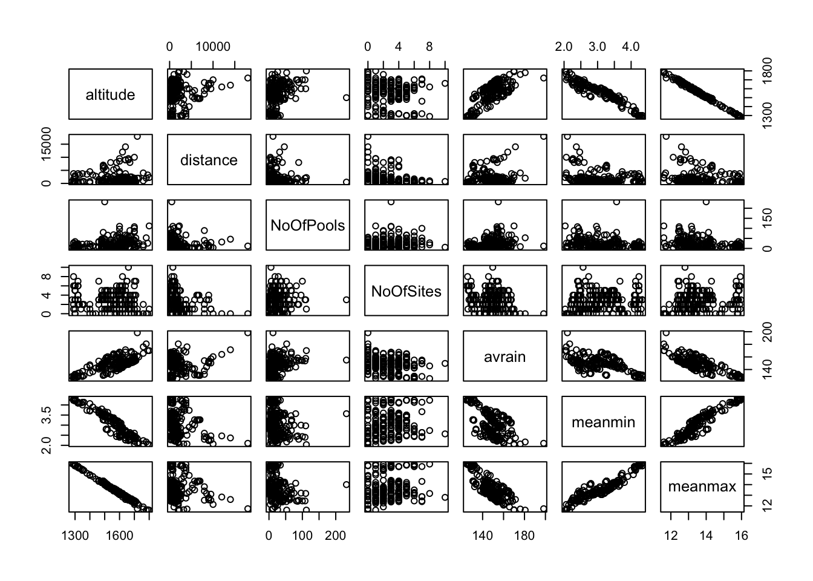
Looking at the data in this way, are there any covariates that might benefit from transformation?
Question: Why bother transforming a covariate?
Click for Answer
As you can see from the scatterplots, some covariates have points with large leverage, and these point may (but don’t always) have high influence on model fit. Often we want all the points to have roughly equal influence on the model fit so we will apply a transformation like the log() to spread out small values all bunched together and to pull in large values that are much larger than the others. These transformations (e.hg., log, square root) are often referred to as “variance stabilizing” transformations.
Let’s try log-transforming “distance” and “Number of Pools”.
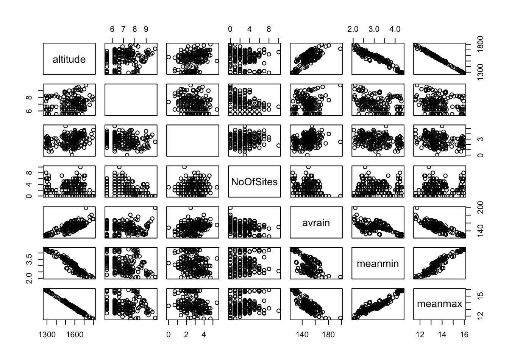
Let’s fit a GLM with all the variables.
Checkpoint #1: Why a GLM? Because the response variable is binary 0/1.
frogs.glm0<-glm(pres.abs~altitude+log(distance)+log(NoOfPools)+NoOfSites+avrain+meanmin+meanmax,family=binomial,data=frogs,na.action=na.fail)
summary(frogs.glm0)##
## Call:
## glm(formula = pres.abs ~ altitude + log(distance) + log(NoOfPools) +
## NoOfSites + avrain + meanmin + meanmax, family = binomial,
## data = frogs, na.action = na.fail)
##
## Deviance Residuals:
## Min 1Q Median 3Q Max
## -1.9795 -0.7193 -0.2785 0.7964 2.5658
##
## Coefficients:
## Estimate Std. Error z value Pr(>|z|)
## (Intercept) 4.090e+01 1.327e+02 0.308 0.757845
## altitude -6.648e-03 3.866e-02 -0.172 0.863466
## log(distance) -7.593e-01 2.554e-01 -2.973 0.002945 **
## log(NoOfPools) 5.727e-01 2.162e-01 2.649 0.008083 **
## NoOfSites -8.979e-04 1.074e-01 -0.008 0.993330
## avrain -6.793e-03 5.999e-02 -0.113 0.909848
## meanmin 5.305e+00 1.543e+00 3.439 0.000584 ***
## meanmax -3.173e+00 4.839e+00 -0.656 0.512048
## ---
## Signif. codes: 0 '***' 0.001 '**' 0.01 '*' 0.05 '.' 0.1 ' ' 1
##
## (Dispersion parameter for binomial family taken to be 1)
##
## Null deviance: 279.99 on 211 degrees of freedom
## Residual deviance: 197.62 on 204 degrees of freedom
## AIC: 213.62
##
## Number of Fisher Scoring iterations: 5(The na.action flag is so MuMIn won’t complain further down.)
Anything look funny? Well, for one, meanmin is highly significant but meanmax and altitude are not - but we would expect these three variables to be highly correlated.
Use the vif() function to explore this further
## altitude log(distance) log(NoOfPools) NoOfSites avrain
## 850.879518 1.396014 1.306058 1.401175 16.664582
## meanmin meanmax
## 29.319704 996.949239It appears that the variances for altitude and meanmax are inflated. Checkpoint #2: Why?
Plot the data:
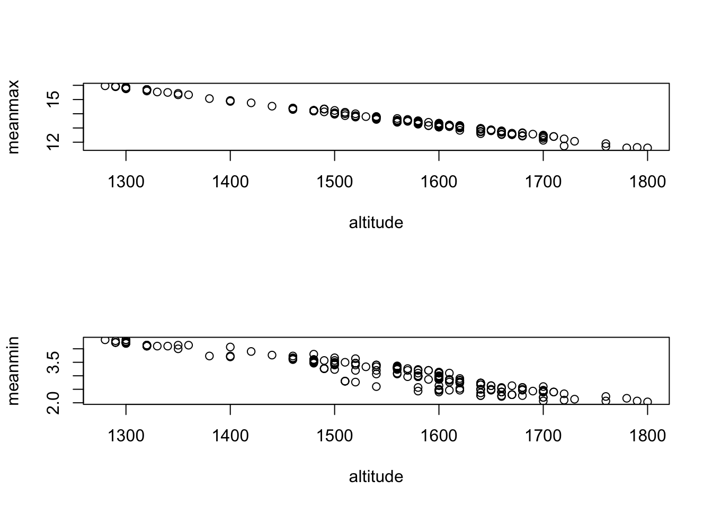
## [1] -0.996557## [1] -0.953661Question: So…what do we do?
Answer: Let’s try removing the least biologically significant variable first. I suggest we remove altitude.
frogs.glm1<-glm(pres.abs~log(distance)+log(NoOfPools)+NoOfSites+avrain+meanmin+meanmax,family=binomial,data=frogs)
summary(frogs.glm1)##
## Call:
## glm(formula = pres.abs ~ log(distance) + log(NoOfPools) + NoOfSites +
## avrain + meanmin + meanmax, family = binomial, data = frogs)
##
## Deviance Residuals:
## Min 1Q Median 3Q Max
## -1.9763 -0.7189 -0.2786 0.7970 2.5745
##
## Coefficients:
## Estimate Std. Error z value Pr(>|z|)
## (Intercept) 18.2689000 16.1381912 1.132 0.257622
## log(distance) -0.7583198 0.2558117 -2.964 0.003033 **
## log(NoOfPools) 0.5708953 0.2153335 2.651 0.008020 **
## NoOfSites -0.0036201 0.1061469 -0.034 0.972794
## avrain 0.0007003 0.0411710 0.017 0.986429
## meanmin 5.3540724 1.5254665 3.510 0.000448 ***
## meanmax -2.3624614 1.0678821 -2.212 0.026947 *
## ---
## Signif. codes: 0 '***' 0.001 '**' 0.01 '*' 0.05 '.' 0.1 ' ' 1
##
## (Dispersion parameter for binomial family taken to be 1)
##
## Null deviance: 279.99 on 211 degrees of freedom
## Residual deviance: 197.65 on 205 degrees of freedom
## AIC: 211.65
##
## Number of Fisher Scoring iterations: 5Better, but we still have a lot of multicollinearity between meanmin and meanmax.
We could choose one or the other but at this point, let’s leave them both in and try and find the best model we can.
First, let’s do a little review of the three comparison criteria we discussed on Tuesday:
Likelihood (specifically, likelihood ratio)
Akaike’s Information Criteria (AIC)
Bayesian Information Criterion (BIC)
We get the log-likelihood of a model in R using the logLik command
## 'log Lik.' -98.81244 (df=8)## 'log Lik.' -98.82714 (df=7)How do we do the likelihood ratio test?
Remember that
\[ -2*(LL(smaller)-LL(bigger)) \sim \chi^{2}_{\mbox{difference in parameters}} \]
In R we can do this with
test.stat<--2*(logLik(frogs.glm1)-logLik(frogs.glm0))
as.numeric(test.stat) # as.numeric is just to suppress the labels which can be misleading## [1] 0.02941079## [1] 0.863834Checkpoint #3: How do we interpret that p-value?
Answer: This p-value is the probability that the larger model fits the data better only by the amount expected by its additional degree of freedom. In this case, we can not reject the null hypothesis that the two models are equivalent, and so we would prefer the smaller model on the basis of parsimony.
We can actually get R to do the LRT automatically using the ‘lrtest’ function in the ‘lmtest’ package.
## Likelihood ratio test
##
## Model 1: pres.abs ~ altitude + log(distance) + log(NoOfPools) + NoOfSites +
## avrain + meanmin + meanmax
## Model 2: pres.abs ~ log(distance) + log(NoOfPools) + NoOfSites + avrain +
## meanmin + meanmax
## #Df LogLik Df Chisq Pr(>Chisq)
## 1 8 -98.812
## 2 7 -98.827 -1 0.0294 0.8638This gives us exactly the same result we got before.
We could also have also compared these models by looking at the ANOVA table for comparison
## Analysis of Deviance Table
##
## Model 1: pres.abs ~ altitude + log(distance) + log(NoOfPools) + NoOfSites +
## avrain + meanmin + meanmax
## Model 2: pres.abs ~ log(distance) + log(NoOfPools) + NoOfSites + avrain +
## meanmin + meanmax
## Resid. Df Resid. Dev Df Deviance
## 1 204 197.62
## 2 205 197.65 -1 -0.029411How do we calculate AIC for these two models?
## 'log Lik.' -98.81244 (df=8)## [1] 213.6249## [1] 213.6249## [1] 211.6543Question: Are these significantly different?
Answer: This is a trick question. In an Information Theoretic context, we avoid the term “significant” because it is implied that we mean “statistically significant” in the context of hypothesis testing, and no hypothesis test is being performed. AIC simply gives us information on the weight of evidence for one model over another. There are no theoretically justified guidelines (although Burnham and Anderson suggest some as we discussed in lecture). It is better (in my opinion) to convert AICs into model weights and, if it makes sense in the context, to do model averaging.
How about BIC? USe the AIC function with a different flag for the penalty.
## [1] 240.4776## [1] 235.1504We could also do this with the BIC() function
## [1] 240.4776## [1] 235.1504As a group, find a small set (3-5) of candidate models, calculate the AIC for each of these models, and calculate model weights.
Checkpoint #4: What covariates were in the best performing model (among the ones you tried as a group) and what was its model weight?
25.2 Model selection via step-wise regression
Ideally, we can narrow down the set of candidate covariates based on biology alone. Another approach that is common in the literature, but which has been criticized, is stepwise regression. The default of the step() function is to use both forward and backward steps. If the function step is given the full model, it will begin with the full model, no matter which direction it is working.
## Start: AIC=213.62
## pres.abs ~ altitude + log(distance) + log(NoOfPools) + NoOfSites +
## avrain + meanmin + meanmax
##
## Df Deviance AIC
## - NoOfSites 1 197.62 211.62
## - avrain 1 197.64 211.64
## - altitude 1 197.65 211.65
## - meanmax 1 198.05 212.05
## <none> 197.62 213.62
## - log(NoOfPools) 1 205.31 219.31
## - log(distance) 1 207.22 221.22
## - meanmin 1 211.27 225.27
##
## Step: AIC=211.62
## pres.abs ~ altitude + log(distance) + log(NoOfPools) + avrain +
## meanmin + meanmax
##
## Df Deviance AIC
## - avrain 1 197.64 209.64
## - altitude 1 197.66 209.66
## - meanmax 1 198.06 210.06
## <none> 197.62 211.62
## - log(NoOfPools) 1 205.31 217.31
## - log(distance) 1 209.80 221.80
## - meanmin 1 211.31 223.31
##
## Step: AIC=209.64
## pres.abs ~ altitude + log(distance) + log(NoOfPools) + meanmin +
## meanmax
##
## Df Deviance AIC
## - altitude 1 197.66 207.66
## - meanmax 1 198.74 208.74
## <none> 197.64 209.64
## - log(NoOfPools) 1 205.31 215.31
## - log(distance) 1 209.88 219.88
## - meanmin 1 213.32 223.32
##
## Step: AIC=207.66
## pres.abs ~ log(distance) + log(NoOfPools) + meanmin + meanmax
##
## Df Deviance AIC
## <none> 197.66 207.66
## - log(NoOfPools) 1 205.34 213.34
## - log(distance) 1 209.91 217.91
## - meanmax 1 214.18 222.18
## - meanmin 1 222.40 230.40##
## Call: glm(formula = pres.abs ~ log(distance) + log(NoOfPools) + meanmin +
## meanmax, family = binomial, data = frogs, na.action = na.fail)
##
## Coefficients:
## (Intercept) log(distance) log(NoOfPools) meanmin meanmax
## 18.5268 -0.7547 0.5707 5.3791 -2.3821
##
## Degrees of Freedom: 211 Total (i.e. Null); 207 Residual
## Null Deviance: 280
## Residual Deviance: 197.7 AIC: 207.7Now compare this to what you would get from
## Start: AIC=213.62
## pres.abs ~ altitude + log(distance) + log(NoOfPools) + NoOfSites +
## avrain + meanmin + meanmax
##
## Df Deviance AIC
## - NoOfSites 1 197.62 211.62
## - avrain 1 197.64 211.64
## - altitude 1 197.65 211.65
## - meanmax 1 198.05 212.05
## <none> 197.62 213.62
## - log(NoOfPools) 1 205.31 219.31
## - log(distance) 1 207.22 221.22
## - meanmin 1 211.27 225.27
##
## Step: AIC=211.62
## pres.abs ~ altitude + log(distance) + log(NoOfPools) + avrain +
## meanmin + meanmax
##
## Df Deviance AIC
## - avrain 1 197.64 209.64
## - altitude 1 197.66 209.66
## - meanmax 1 198.06 210.06
## <none> 197.62 211.62
## - log(NoOfPools) 1 205.31 217.31
## - log(distance) 1 209.80 221.80
## - meanmin 1 211.31 223.31
##
## Step: AIC=209.64
## pres.abs ~ altitude + log(distance) + log(NoOfPools) + meanmin +
## meanmax
##
## Df Deviance AIC
## - altitude 1 197.66 207.66
## - meanmax 1 198.74 208.74
## <none> 197.64 209.64
## - log(NoOfPools) 1 205.31 215.31
## - log(distance) 1 209.88 219.88
## - meanmin 1 213.32 223.32
##
## Step: AIC=207.66
## pres.abs ~ log(distance) + log(NoOfPools) + meanmin + meanmax
##
## Df Deviance AIC
## <none> 197.66 207.66
## - log(NoOfPools) 1 205.34 213.34
## - log(distance) 1 209.91 217.91
## - meanmax 1 214.18 222.18
## - meanmin 1 222.40 230.40##
## Call: glm(formula = pres.abs ~ log(distance) + log(NoOfPools) + meanmin +
## meanmax, family = binomial, data = frogs, na.action = na.fail)
##
## Coefficients:
## (Intercept) log(distance) log(NoOfPools) meanmin meanmax
## 18.5268 -0.7547 0.5707 5.3791 -2.3821
##
## Degrees of Freedom: 211 Total (i.e. Null); 207 Residual
## Null Deviance: 280
## Residual Deviance: 197.7 AIC: 207.7The output can be interpreted as follows: the full model has an AIC of 213.62, but if NoOfSites were removed the subsequent model would have an AIC of 211.62, if avrain were removed 211.64, etc, including \(<none>\), which represents removing no variables. The covariates are listed in order of lowest AIC if they were to be removed, to highest AIC. Since removing NoOfSites would result in the lowest AIC, including being lower than the current model, \(<none>\), NoOfSites is removed for the next step and the process is repeated over again. This continues until \(<none>\) has the lowest AIC, meaning no variables can be removed to decrease the AIC from the current model. In this case, this occurred when log(NoOfPools), log(distance), meanmax, and meanmin were in the model. At this point, the process ends and the model from that step is reported as the output.
However, if we attempt to use forward stepwise selection starting with the full model, the process does not work. The function begins with the full model, sees that there are no variables it could add to decrease the AIC because we haven’t given it any more variables, then reports the full model as the outcome.
## Start: AIC=213.62
## pres.abs ~ altitude + log(distance) + log(NoOfPools) + NoOfSites +
## avrain + meanmin + meanmax##
## Call: glm(formula = pres.abs ~ altitude + log(distance) + log(NoOfPools) +
## NoOfSites + avrain + meanmin + meanmax, family = binomial,
## data = frogs, na.action = na.fail)
##
## Coefficients:
## (Intercept) altitude log(distance) log(NoOfPools) NoOfSites
## 40.8988354 -0.0066477 -0.7593044 0.5727269 -0.0008979
## avrain meanmin meanmax
## -0.0067930 5.3047879 -3.1729589
##
## Degrees of Freedom: 211 Total (i.e. Null); 204 Residual
## Null Deviance: 280
## Residual Deviance: 197.6 AIC: 213.6This is clearly not the result that we want, because there are many insignificant variables in the model.
##
## Call:
## glm(formula = pres.abs ~ altitude + log(distance) + log(NoOfPools) +
## NoOfSites + avrain + meanmin + meanmax, family = binomial,
## data = frogs, na.action = na.fail)
##
## Deviance Residuals:
## Min 1Q Median 3Q Max
## -1.9795 -0.7193 -0.2785 0.7964 2.5658
##
## Coefficients:
## Estimate Std. Error z value Pr(>|z|)
## (Intercept) 4.090e+01 1.327e+02 0.308 0.757845
## altitude -6.648e-03 3.866e-02 -0.172 0.863466
## log(distance) -7.593e-01 2.554e-01 -2.973 0.002945 **
## log(NoOfPools) 5.727e-01 2.162e-01 2.649 0.008083 **
## NoOfSites -8.979e-04 1.074e-01 -0.008 0.993330
## avrain -6.793e-03 5.999e-02 -0.113 0.909848
## meanmin 5.305e+00 1.543e+00 3.439 0.000584 ***
## meanmax -3.173e+00 4.839e+00 -0.656 0.512048
## ---
## Signif. codes: 0 '***' 0.001 '**' 0.01 '*' 0.05 '.' 0.1 ' ' 1
##
## (Dispersion parameter for binomial family taken to be 1)
##
## Null deviance: 279.99 on 211 degrees of freedom
## Residual deviance: 197.62 on 204 degrees of freedom
## AIC: 213.62
##
## Number of Fisher Scoring iterations: 5We need to give the function the model that we want it to start with, in this case, the “empty model.” The empty model predicts the number of species at a site using no covariates, only an intercept, and is denoted as pres.abs ~ 1 in R.
##
## Call:
## glm(formula = pres.abs ~ 1, family = "binomial", data = frogs)
##
## Deviance Residuals:
## Min 1Q Median 3Q Max
## -0.9657 -0.9657 -0.9657 1.4051 1.4051
##
## Coefficients:
## Estimate Std. Error z value Pr(>|z|)
## (Intercept) -0.5209 0.1420 -3.667 0.000245 ***
## ---
## Signif. codes: 0 '***' 0.001 '**' 0.01 '*' 0.05 '.' 0.1 ' ' 1
##
## (Dispersion parameter for binomial family taken to be 1)
##
## Null deviance: 279.99 on 211 degrees of freedom
## Residual deviance: 279.99 on 211 degrees of freedom
## AIC: 281.99
##
## Number of Fisher Scoring iterations: 4We also need to give the step function all of the possible covariates that it can add to find the best model. This is done using the scope= ~ command in step.
step(frogs.glm.empty, scope= ~log(distance)+log(NoOfPools)+NoOfSites+avrain+meanmin+meanmax, data=frogs, direction="forward")## Start: AIC=281.99
## pres.abs ~ 1
##
## Df Deviance AIC
## + log(distance) 1 229.15 233.15
## + meanmin 1 254.40 258.40
## + meanmax 1 269.52 273.52
## + log(NoOfPools) 1 273.59 277.59
## + NoOfSites 1 274.51 278.51
## <none> 279.99 281.99
## + avrain 1 279.95 283.95
##
## Step: AIC=233.15
## pres.abs ~ log(distance)
##
## Df Deviance AIC
## + meanmin 1 220.90 226.90
## + meanmax 1 226.55 232.55
## <none> 229.15 233.15
## + log(NoOfPools) 1 227.44 233.44
## + NoOfSites 1 228.28 234.28
## + avrain 1 229.07 235.07
##
## Step: AIC=226.9
## pres.abs ~ log(distance) + meanmin
##
## Df Deviance AIC
## + meanmax 1 205.34 213.34
## + avrain 1 210.12 218.12
## + log(NoOfPools) 1 214.18 222.18
## <none> 220.90 226.90
## + NoOfSites 1 220.26 228.26
##
## Step: AIC=213.34
## pres.abs ~ log(distance) + meanmin + meanmax
##
## Df Deviance AIC
## + log(NoOfPools) 1 197.66 207.66
## <none> 205.34 213.34
## + avrain 1 205.33 215.33
## + NoOfSites 1 205.34 215.34
##
## Step: AIC=207.66
## pres.abs ~ log(distance) + meanmin + meanmax + log(NoOfPools)
##
## Df Deviance AIC
## <none> 197.66 207.66
## + NoOfSites 1 197.66 209.66
## + avrain 1 197.66 209.66##
## Call: glm(formula = pres.abs ~ log(distance) + meanmin + meanmax +
## log(NoOfPools), family = "binomial", data = frogs)
##
## Coefficients:
## (Intercept) log(distance) meanmin meanmax log(NoOfPools)
## 18.5268 -0.7547 5.3791 -2.3821 0.5707
##
## Degrees of Freedom: 211 Total (i.e. Null); 207 Residual
## Null Deviance: 280
## Residual Deviance: 197.7 AIC: 207.7The function now does what we want it to do! It begins with the empty model and reports an AIC of 281.99, and lists the AIC for each variable if it were to be added to the empty model (log(distance) = 229.15, meanmin = 258.40, etc.). Since adding log(distance) results in the lowest AIC, it adds log(distance), then repeats the process. It continues this process until \(<none>\) is at the top of the list, meaning there are no variables that can be added that will decrease the AIC. It then reports that model, in this case pres.abs ~ log(distance) + log(NoOfPools) + meanmin + meanmax, as the best model.
Starting with the full model works fine for direction = “both”. It takes the full model, takes away the least useful covariate, then has the option to add that covariate back in, or take away another. It repeats this until neither adding nor subtracting variables decreases the AIC of the model.
## Start: AIC=213.62
## pres.abs ~ altitude + log(distance) + log(NoOfPools) + NoOfSites +
## avrain + meanmin + meanmax
##
## Df Deviance AIC
## - NoOfSites 1 197.62 211.62
## - avrain 1 197.64 211.64
## - altitude 1 197.65 211.65
## - meanmax 1 198.05 212.05
## <none> 197.62 213.62
## - log(NoOfPools) 1 205.31 219.31
## - log(distance) 1 207.22 221.22
## - meanmin 1 211.27 225.27
##
## Step: AIC=211.62
## pres.abs ~ altitude + log(distance) + log(NoOfPools) + avrain +
## meanmin + meanmax
##
## Df Deviance AIC
## - avrain 1 197.64 209.64
## - altitude 1 197.66 209.66
## - meanmax 1 198.06 210.06
## <none> 197.62 211.62
## + NoOfSites 1 197.62 213.62
## - log(NoOfPools) 1 205.31 217.31
## - log(distance) 1 209.80 221.80
## - meanmin 1 211.31 223.31
##
## Step: AIC=209.64
## pres.abs ~ altitude + log(distance) + log(NoOfPools) + meanmin +
## meanmax
##
## Df Deviance AIC
## - altitude 1 197.66 207.66
## - meanmax 1 198.74 208.74
## <none> 197.64 209.64
## + avrain 1 197.62 211.62
## + NoOfSites 1 197.64 211.64
## - log(NoOfPools) 1 205.31 215.31
## - log(distance) 1 209.88 219.88
## - meanmin 1 213.32 223.32
##
## Step: AIC=207.66
## pres.abs ~ log(distance) + log(NoOfPools) + meanmin + meanmax
##
## Df Deviance AIC
## <none> 197.66 207.66
## + altitude 1 197.64 209.64
## + NoOfSites 1 197.66 209.66
## + avrain 1 197.66 209.66
## - log(NoOfPools) 1 205.34 213.34
## - log(distance) 1 209.91 217.91
## - meanmax 1 214.18 222.18
## - meanmin 1 222.40 230.40##
## Call: glm(formula = pres.abs ~ log(distance) + log(NoOfPools) + meanmin +
## meanmax, family = binomial, data = frogs, na.action = na.fail)
##
## Coefficients:
## (Intercept) log(distance) log(NoOfPools) meanmin meanmax
## 18.5268 -0.7547 0.5707 5.3791 -2.3821
##
## Degrees of Freedom: 211 Total (i.e. Null); 207 Residual
## Null Deviance: 280
## Residual Deviance: 197.7 AIC: 207.7However, it can also be done starting with the empty model, where its first step is to add a covariate to the empty model, then proceed from there.
step(frogs.glm.empty, scope= ~log(distance)+log(NoOfPools)+NoOfSites+avrain+meanmin+meanmax, direction="both")## Start: AIC=281.99
## pres.abs ~ 1
##
## Df Deviance AIC
## + log(distance) 1 229.15 233.15
## + meanmin 1 254.40 258.40
## + meanmax 1 269.52 273.52
## + log(NoOfPools) 1 273.59 277.59
## + NoOfSites 1 274.51 278.51
## <none> 279.99 281.99
## + avrain 1 279.95 283.95
##
## Step: AIC=233.15
## pres.abs ~ log(distance)
##
## Df Deviance AIC
## + meanmin 1 220.90 226.90
## + meanmax 1 226.55 232.55
## <none> 229.15 233.15
## + log(NoOfPools) 1 227.44 233.44
## + NoOfSites 1 228.28 234.28
## + avrain 1 229.07 235.07
## - log(distance) 1 279.99 281.99
##
## Step: AIC=226.9
## pres.abs ~ log(distance) + meanmin
##
## Df Deviance AIC
## + meanmax 1 205.34 213.34
## + avrain 1 210.12 218.12
## + log(NoOfPools) 1 214.18 222.18
## <none> 220.90 226.90
## + NoOfSites 1 220.26 228.26
## - meanmin 1 229.15 233.15
## - log(distance) 1 254.40 258.40
##
## Step: AIC=213.34
## pres.abs ~ log(distance) + meanmin + meanmax
##
## Df Deviance AIC
## + log(NoOfPools) 1 197.66 207.66
## <none> 205.34 213.34
## + avrain 1 205.33 215.33
## + NoOfSites 1 205.34 215.34
## - meanmax 1 220.90 226.90
## - log(distance) 1 225.85 231.85
## - meanmin 1 226.55 232.55
##
## Step: AIC=207.66
## pres.abs ~ log(distance) + meanmin + meanmax + log(NoOfPools)
##
## Df Deviance AIC
## <none> 197.66 207.66
## + NoOfSites 1 197.66 209.66
## + avrain 1 197.66 209.66
## - log(NoOfPools) 1 205.34 213.34
## - log(distance) 1 209.91 217.91
## - meanmax 1 214.18 222.18
## - meanmin 1 222.40 230.40##
## Call: glm(formula = pres.abs ~ log(distance) + meanmin + meanmax +
## log(NoOfPools), family = "binomial", data = frogs)
##
## Coefficients:
## (Intercept) log(distance) meanmin meanmax log(NoOfPools)
## 18.5268 -0.7547 5.3791 -2.3821 0.5707
##
## Degrees of Freedom: 211 Total (i.e. Null); 207 Residual
## Null Deviance: 280
## Residual Deviance: 197.7 AIC: 207.7The real magic comes when we use a package like ‘MuMIn’ (Multimodel Inference)
## Fixed term is "(Intercept)"## Global model call: glm(formula = pres.abs ~ altitude + log(distance) + log(NoOfPools) +
## NoOfSites + avrain + meanmin + meanmax, family = binomial,
## data = frogs, na.action = na.fail)
## ---
## Model selection table
## (Int) alt avr log(dst) log(NOP) mnmx mnmn
## 61 18.53000 -0.7547 0.5707 -2.38200 5.3790
## 46 -51.58000 0.0231400 -0.7619 0.5598 5.9520
## 62 28.93000 -0.0034840 -0.7553 0.5716 -2.72100 5.2570
## 125 18.53000 -0.7590 0.5710 -2.37700 5.3700
## 63 18.16000 0.0009902 -0.7543 0.5707 -2.36100 5.3560
## 48 -45.93000 0.0181700 0.0266100 -0.7437 0.5631 5.3080
## 110 -50.64000 0.0228600 -0.7953 0.5623 5.8910
## 64 41.04000 -0.0066960 -0.0067780 -0.7583 0.5727 -3.17800 5.3050
## 126 28.84000 -0.0034520 -0.7558 0.5716 -2.71700 5.2570
## 127 18.27000 0.0007003 -0.7583 0.5709 -2.36200 5.3540
## 112 -45.80000 0.0182300 0.0257700 -0.7551 0.5638 5.3080
## 47 -14.29000 0.0721300 -0.7924 0.5455 2.1740
## 53 21.47000 -0.9221 -2.25600 4.7810
## 128 40.90000 -0.0066480 -0.0067930 -0.7593 0.5727 -3.17300 5.3050
## 38 -44.64000 0.0217700 -0.9299 5.2960
## 111 -14.33000 0.0722500 -0.7903 0.5454 2.1760
## 54 33.40000 -0.0039860 -0.9222 -2.64600 4.6470
## 55 20.22000 0.0034080 -0.9202 -2.18500 4.7050
## 117 21.47000 -0.9193 -2.25900 4.7870
## 40 -39.23000 0.0168400 0.0272300 -0.9080 4.6710
## 102 -43.92000 0.0215600 -0.9548 5.2490
## 121 15.48000 0.7078 -2.86800 6.5640
## 118 34.67000 -0.0044110 -0.9147 -2.69700 4.6490
## 56 38.63000 -0.0053740 -0.0029350 -0.9239 -2.84300 4.6660
## 119 20.08000 0.0037900 -0.9150 -2.18300 4.7070
## 104 -39.22000 0.0168500 0.0271500 -0.9091 4.6700
## 57 14.78000 0.7515 -2.76600 6.4440
## 39 -10.29000 0.0704800 -0.9389 1.7990
## 42 -67.27000 0.0271400 0.7407 7.1610
## 123 10.13000 0.0145800 0.7037 -2.55800 6.2240
## 106 -68.17000 0.0275000 0.7057 7.1910
## 122 36.11000 -0.0068950 0.7084 -3.54600 6.3380
## 120 39.59000 -0.0057160 -0.0027840 -0.9164 -2.88200 4.6670
## 108 -59.48000 0.0198800 0.0415200 0.6935 6.1980
## 44 -60.67000 0.0214900 0.0300900 0.7388 6.4230
## 58 4.26100 0.0035230 0.7501 -2.42300 6.5640
## 59 14.15000 0.0016700 0.7514 -2.72900 6.4030
## 103 -10.54000 0.0711800 -0.9270 1.8100
## 16 7.78400 -0.0095890 0.0772300 -0.9211 0.4622
## 124 7.02900 0.0009015 0.0156800 0.7033 -2.44600 6.2280
## 31 -25.39000 0.0889800 -0.9126 0.4583 1.21000
## 60 -25.77000 0.0115700 0.0161800 0.7449 -1.28600 6.4470
## 45 0.68640 -0.9050 0.5027 1.1150
## 30 171.20000 -0.0549900 -0.9926 0.4544 -5.93600
## 109 1.52600 -0.9867 0.5102 1.1030
## 80 8.03300 -0.0094940 0.0759000 -0.9417 0.4640
## 32 28.01000 -0.0153900 0.0696800 -0.9275 0.4632 -0.73800
## 95 -24.73000 0.0873300 -0.9365 0.4605 1.19700
## 8 7.89600 -0.0079910 0.0738300 -1.0310
## 23 -19.78000 0.0836700 -1.0230 1.01000
## 107 -24.84000 0.0878800 0.6831 2.7640
## 94 167.30000 -0.0536800 -1.0180 0.4564 -5.78400
## 96 26.31000 -0.0147500 0.0691700 -0.9460 0.4648 -0.66760
## 22 163.80000 -0.0513600 -1.0970 -5.66500
## 37 4.04100 -1.0450 0.8095
## 24 27.44000 -0.0135900 0.0665100 -1.0370 -0.71300
## 72 8.03500 -0.0079340 0.0730600 -1.0420
## 43 -22.87000 0.0784300 0.7370 2.7040
## 87 -19.37000 0.0826300 -1.0380 1.00100
## 101 4.82900 -1.1200 0.7954
## 86 161.10000 -0.0504200 -1.1140 -5.55700
## 113 18.49000 -2.84900 6.1290
## 88 26.58000 -0.0132600 0.0662000 -1.0470 -0.67720
## 14 10.82000 -0.0035650 -1.0220 0.4011
## 78 11.71000 -0.0035710 -1.1130 0.4129
## 29 0.38330 -1.0400 0.3807 0.37270
## 115 9.95400 0.0233400 -2.36100 5.6050
## 100 -54.64000 0.0185100 0.0480700 5.6130
## 114 46.40000 -0.0093210 -3.77000 5.8350
## 93 1.22500 -1.1330 0.3946 0.37800
## 98 -63.97000 0.0270400 6.6860
## 6 10.90000 -0.0024360 -1.1230
## 49 17.74000 -2.70600 5.9250
## 21 3.78600 -1.1340 0.25010
## 116 -14.39000 0.0070520 0.0321900 -1.48000 5.6320
## 34 -62.19000 0.0264000 6.5890
## 70 11.71000 -0.0024230 -1.2060
## 5 7.68400 -1.2040
## 13 6.80900 -1.1680 0.2237
## 36 -55.32000 0.0203300 0.0332800 5.8200
## 85 4.61900 -1.2190 0.25220
## 51 15.12000 0.0070460 -2.55200 5.7580
## 50 7.34400 0.0034820 -2.36600 6.0410
## 69 8.51000 -1.2860
## 77 7.65500 -1.2540 0.2315
## 7 7.11800 0.0040160 -1.2080
## 15 6.95000 -0.0011020 -1.1670 0.2273
## 52 -57.05000 0.0208200 0.0339800 0.06385 5.8190
## 99 -22.42000 0.0909300 2.4310
## 71 8.25500 0.0016800 -1.2860
## 79 8.23400 -0.0041500 -1.2530 0.2459
## 35 -19.64000 0.0789800 2.3260
## 91 -41.16000 0.1113000 0.6039 1.59300
## 76 2.41000 -0.0125800 0.0953200 0.6084
## 41 -7.61300 0.7316 1.5830
## 105 -7.72800 0.7033 1.5490
## 92 -68.98000 0.0080870 0.1209000 0.5997 2.61100
## 27 -38.57000 0.1006000 0.6573 1.54900
## 12 3.82200 -0.0121600 0.0843300 0.6619
## 28 -108.30000 0.0202200 0.1254000 0.6439 4.09600
## 90 174.80000 -0.0596700 0.6255 -6.25300
## 83 -37.08000 0.1114000 1.41100
## 68 1.51100 -0.0111000 0.0969900
## 84 -83.69000 0.0135300 0.1277000 3.11500
## 26 142.50000 -0.0493600 0.6721 -5.02400
## 19 -33.37000 0.0978600 1.33700
## 4 3.21500 -0.0104300 0.0832300
## 20 -130.00000 0.0279800 0.1324000 4.86500
## 97 -4.69200 1.1780
## 33 -4.34600 1.2070
## 10 6.32200 -0.0056080 0.6344
## 74 5.74400 -0.0053960 0.6019
## 82 170.70000 -0.0570500 -6.13000
## 25 -10.59000 0.6152 0.60690
## 89 -10.44000 0.5822 0.57870
## 18 132.00000 -0.0445500 -4.65700
## 66 4.88500 -0.0038050
## 81 -6.45900 0.40020
## 2 5.63300 -0.0039940
## 17 -6.38200 0.42720
## 73 -1.97500 0.3479
## 75 -1.28400 -0.0048460 0.3651
## 9 -1.58400 0.3765
## 65 -1.04300
## 11 -0.02344 -0.0112600 0.4140
## 67 -1.64300 0.0039450
## 1 -0.52090
## 3 -0.17310 -0.0023490
## NOS df logLik AICc delta weight
## 61 5 -98.828 207.9 0.00 0.250
## 46 5 -99.368 209.0 1.08 0.146
## 62 6 -98.819 210.0 2.10 0.088
## 125 -0.0039920 6 -98.827 210.1 2.12 0.087
## 63 6 -98.828 210.1 2.12 0.087
## 48 6 -99.030 210.5 2.52 0.071
## 110 -0.0313600 6 -99.320 211.1 3.10 0.053
## 64 7 -98.812 212.2 4.23 0.030
## 126 -0.0005225 7 -98.819 212.2 4.24 0.030
## 127 -0.0036200 7 -98.827 212.2 4.26 0.030
## 112 -0.0100800 7 -99.025 212.6 4.65 0.024
## 47 5 -101.473 213.2 5.29 0.018
## 53 4 -102.670 213.5 5.59 0.015
## 128 -0.0008979 8 -98.812 214.3 6.39 0.010
## 38 4 -103.185 214.6 6.62 0.009
## 111 0.0019890 6 -101.473 215.4 7.41 0.006
## 54 5 -102.658 215.6 7.66 0.005
## 55 5 -102.666 215.6 7.68 0.005
## 117 0.0025550 5 -102.670 215.6 7.68 0.005
## 40 5 -102.831 216.0 8.01 0.005
## 102 -0.0229600 5 -103.158 216.6 8.66 0.003
## 121 0.1417000 5 -103.690 217.7 9.72 0.002
## 118 0.0069150 6 -102.655 217.7 9.77 0.002
## 56 6 -102.656 217.7 9.78 0.002
## 119 0.0045760 6 -102.665 217.7 9.79 0.002
## 104 -0.0009286 6 -102.831 218.1 10.12 0.002
## 57 4 -104.954 218.1 10.15 0.002
## 39 4 -105.058 218.3 10.36 0.001
## 42 4 -105.494 219.2 11.23 0.001
## 123 0.1495000 6 -103.612 219.6 11.69 0.001
## 106 0.1109000 5 -104.704 219.7 11.75 0.001
## 122 0.1494000 6 -103.648 219.7 11.76 0.001
## 120 0.0067250 7 -102.654 219.9 11.91 0.001
## 108 0.1414000 6 -103.743 219.9 11.95 0.001
## 44 5 -104.940 220.2 12.22 0.001
## 58 5 -104.941 220.2 12.23 0.001
## 59 5 -104.953 220.2 12.25 0.001
## 103 0.0109500 5 -105.052 220.4 12.45 0.000
## 16 5 -105.670 221.6 13.68 0.000
## 124 0.1491000 7 -103.611 221.8 13.82 0.000
## 31 5 -105.761 221.8 13.87 0.000
## 60 6 -104.902 222.2 14.27 0.000
## 45 4 -107.089 222.4 14.42 0.000
## 30 5 -106.658 223.6 15.66 0.000
## 109 -0.0868600 5 -106.703 223.7 15.75 0.000
## 80 -0.0208000 6 -105.649 223.7 15.76 0.000
## 32 6 -105.654 223.7 15.77 0.000
## 95 -0.0240100 6 -105.733 223.9 15.93 0.000
## 8 4 -108.393 225.0 17.03 0.000
## 23 4 -108.460 225.1 17.17 0.000
## 107 0.1784000 5 -107.491 225.3 17.33 0.000
## 94 -0.0277700 6 -106.622 225.7 17.71 0.000
## 96 -0.0193800 7 -105.637 225.8 17.88 0.000
## 22 4 -109.274 226.7 18.79 0.000
## 37 3 -110.450 227.0 19.07 0.000
## 24 5 -108.379 227.0 19.10 0.000
## 72 -0.0112700 5 -108.387 227.1 19.12 0.000
## 43 4 -109.478 227.1 19.20 0.000
## 87 -0.0139100 5 -108.451 227.2 19.25 0.000
## 101 -0.0774900 4 -110.128 228.4 20.50 0.000
## 86 -0.0188800 5 -109.256 228.8 20.86 0.000
## 113 0.1874000 4 -110.480 229.2 21.21 0.000
## 88 -0.0098920 6 -108.374 229.2 21.21 0.000
## 14 4 -110.658 229.5 21.56 0.000
## 78 -0.0998600 5 -110.119 230.5 22.58 0.000
## 29 4 -111.202 230.6 22.65 0.000
## 115 0.1996000 5 -110.252 230.8 22.85 0.000
## 100 0.1917000 5 -110.283 230.9 22.91 0.000
## 114 0.1977000 5 -110.391 231.1 23.13 0.000
## 93 -0.1042000 5 -110.610 231.5 23.56 0.000
## 98 0.1580000 4 -111.733 231.7 23.71 0.000
## 6 3 -112.923 232.0 24.01 0.000
## 49 3 -112.924 232.0 24.02 0.000
## 21 3 -113.273 232.7 24.71 0.000
## 116 0.1964000 6 -110.234 232.9 24.93 0.000
## 34 3 -113.514 233.1 25.20 0.000
## 70 -0.0886600 4 -112.483 233.2 25.21 0.000
## 5 2 -114.577 233.2 25.26 0.000
## 13 3 -113.719 233.6 25.61 0.000
## 36 4 -112.729 233.7 25.70 0.000
## 85 -0.0917800 4 -112.799 233.8 25.84 0.000
## 51 4 -112.900 234.0 26.05 0.000
## 50 4 -112.910 234.0 26.07 0.000
## 69 -0.0861500 3 -114.142 234.4 26.45 0.000
## 77 -0.0911900 4 -113.233 234.7 26.71 0.000
## 7 3 -114.537 235.2 27.24 0.000
## 15 4 -113.716 235.6 27.68 0.000
## 52 5 -112.729 235.7 27.80 0.000
## 99 0.2238000 4 -113.959 236.1 28.16 0.000
## 71 -0.0841400 4 -114.135 236.5 28.52 0.000
## 79 -0.0966200 5 -113.194 236.7 28.73 0.000
## 35 3 -117.391 240.9 32.95 0.000
## 91 0.1876000 5 -115.662 241.6 33.67 0.000
## 76 0.1952000 5 -115.875 242.0 34.09 0.000
## 41 3 -118.231 242.6 34.63 0.000
## 105 0.0995700 4 -117.532 243.3 35.31 0.000
## 92 0.1825000 6 -115.625 243.7 35.71 0.000
## 27 4 -118.048 244.3 36.34 0.000
## 12 4 -118.452 245.1 37.15 0.000
## 28 5 -117.797 245.9 37.94 0.000
## 90 0.1989000 5 -119.943 250.2 42.23 0.000
## 83 0.2269000 4 -121.222 250.6 42.69 0.000
## 68 0.2335000 4 -121.485 251.2 43.22 0.000
## 84 0.2183000 5 -121.111 252.5 44.57 0.000
## 26 4 -122.592 253.4 45.43 0.000
## 19 3 -124.993 256.1 48.15 0.000
## 4 3 -125.468 257.1 49.10 0.000
## 20 4 -124.476 257.1 49.20 0.000
## 97 0.1438000 3 -125.583 257.3 49.33 0.000
## 33 2 -127.199 258.5 50.51 0.000
## 10 3 -126.706 259.5 51.58 0.000
## 74 0.1141000 4 -125.693 259.6 51.63 0.000
## 82 0.2354000 4 -126.085 260.4 52.42 0.000
## 25 3 -127.803 261.7 53.77 0.000
## 89 0.1093000 4 -126.867 261.9 53.98 0.000
## 18 3 -130.106 266.3 58.38 0.000
## 66 0.1516000 3 -132.034 270.2 62.24 0.000
## 81 0.1481000 3 -132.892 271.9 63.95 0.000
## 2 2 -133.978 272.0 64.07 0.000
## 17 2 -134.759 273.6 65.63 0.000
## 73 0.1564000 3 -134.617 275.4 67.40 0.000
## 75 0.1491000 4 -134.550 277.3 69.35 0.000
## 9 2 -136.793 277.6 69.70 0.000
## 65 0.1733000 2 -137.255 278.6 70.62 0.000
## 11 3 -136.394 278.9 70.96 0.000
## 67 0.1786000 3 -137.204 280.5 72.58 0.000
## 1 1 -139.993 282.0 74.06 0.000
## 3 2 -139.974 284.0 76.06 0.000
## Models ranked by AICc(x)We can make a table to compare a hand-selected set of models.
## Model selection table
## (Int) alt avr log(dst) log(NOP) mnmx mnmn NOS
## frogs.glm1 18.27 0.0007003 -0.7583 0.5709 -2.362 5.354 -0.0036200
## frogs.glm0 40.90 -0.006648 -0.0067930 -0.7593 0.5727 -3.173 5.305 -0.0008979
## family na.action df logLik AICc delta weight
## frogs.glm1 binomial(logit) 7 -98.827 212.2 0.00 0.744
## frogs.glm0 binomial(logit) na.fail 8 -98.812 214.3 2.13 0.256
## Models ranked by AICc(x)We can do model averaging
##
## Call:
## model.avg(object = frogs.glm0, frogs.glm1)
##
## Component model call:
## glm(formula = <2 unique values>, family = binomial, data = frogs,
## na.action = <2 unique values>)
##
## Component models:
## df logLik AICc delta weight
## 234567 7 -98.83 212.20 0.00 0.74
## 1234567 8 -98.81 214.33 2.13 0.26
##
## Term codes:
## altitude avrain log(distance) log(NoOfPools) meanmax
## 1 2 3 4 5
## meanmin NoOfSites
## 6 7
##
## Model-averaged coefficients:
## (full average)
## Estimate Std. Error Adjusted SE z value Pr(>|z|)
## (Intercept) 24.068195 69.288185 69.693226 0.345 0.72984
## log(distance) -0.758572 0.255698 0.257218 2.949 0.00319 **
## log(NoOfPools) 0.571365 0.215568 0.216850 2.635 0.00842 **
## NoOfSites -0.002923 0.106481 0.107115 0.027 0.97823
## avrain -0.001220 0.046837 0.047114 0.026 0.97934
## meanmin 5.341442 1.530021 1.539117 3.470 0.00052 ***
## meanmax -2.570165 2.641027 2.656497 0.968 0.33329
## altitude -0.001704 0.019784 0.019899 0.086 0.93178
##
## (conditional average)
## Estimate Std. Error Adjusted SE z value Pr(>|z|)
## (Intercept) 24.068195 69.288185 69.693226 0.345 0.72984
## log(distance) -0.758572 0.255698 0.257218 2.949 0.00319 **
## log(NoOfPools) 0.571365 0.215568 0.216850 2.635 0.00842 **
## NoOfSites -0.002923 0.106481 0.107115 0.027 0.97823
## avrain -0.001220 0.046837 0.047114 0.026 0.97934
## meanmin 5.341442 1.530021 1.539117 3.470 0.00052 ***
## meanmax -2.570165 2.641027 2.656497 0.968 0.33329
## altitude -0.006648 0.038658 0.038888 0.171 0.86427
## ---
## Signif. codes: 0 '***' 0.001 '**' 0.01 '*' 0.05 '.' 0.1 ' ' 1What does the output mean “with shrinkage”? These estimates include a zero value when a parameter does not actually appear in a model. In this case ‘altitude’ appears in only one of the two models and so the estimate “with shrinkage” is signicantly smaller than the parameter value estimated only from a weighting of the models including the covariate ‘altitude’.
25.3 Part 2: Model criticism
We are going to use a dataset that comes from the journal Ecology, which is available here.
STOP: Let’s read the abstract so we know what we are modelling.
The goal is to create the best possible, most parsimonious model for maximum longevity in non-volant mammals. The covariates we have in this dataset to consider are:
Order
Family
Genus
Species
Mass (g)
Gestation (mo)
Newborn weight (g)
Weaning age (mo)
Weaning mass (g)
Age of first reproduction (mo)
Litter size
Litters/year
First, we will load the data and the ‘car’ package, and use ‘names’ to see what the columns are named
## [1] "Order" "Family" "Genus" "Species"
## [5] "Mass" "Gestation" "Newborn" "Weaning"
## [9] "WeanMass" "AFR" "MaxLifespan" "LitterSize"
## [13] "LittersPerYear"Before fitting any models, let’s just look at each potential covariate vs. maximum longevity to get a sense for which variables need to be transformed. I list get the first few here…

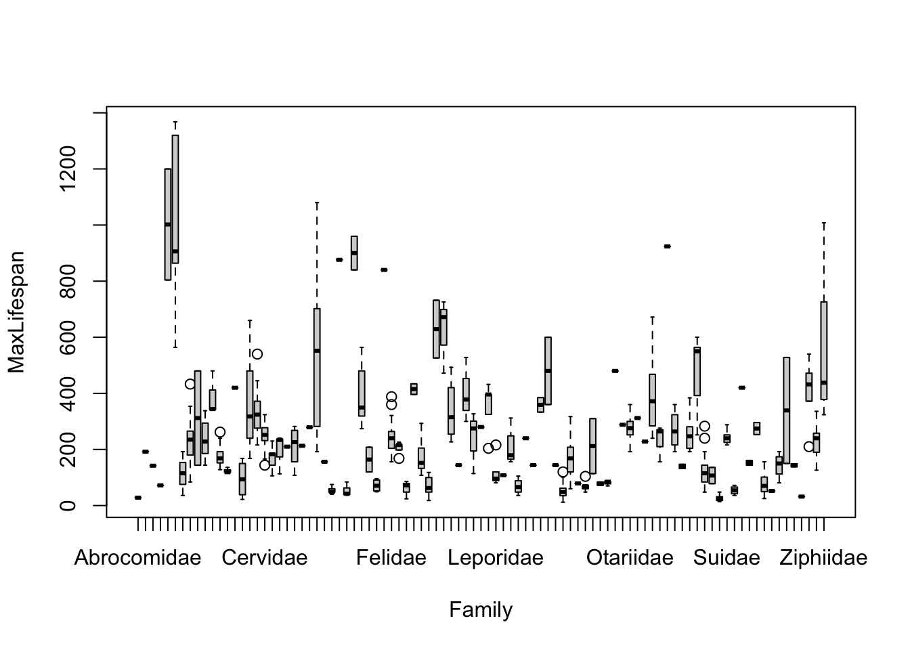
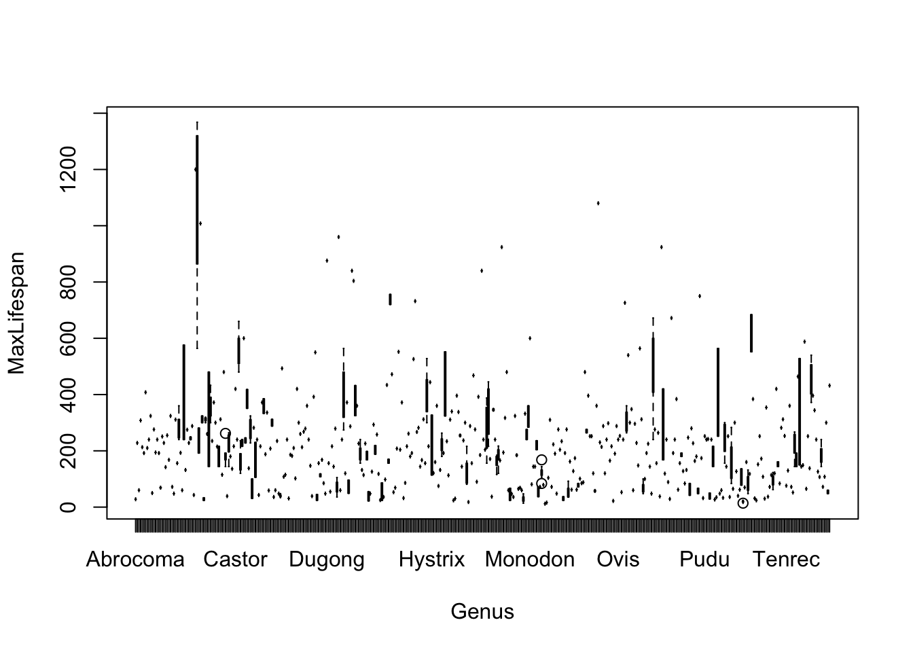
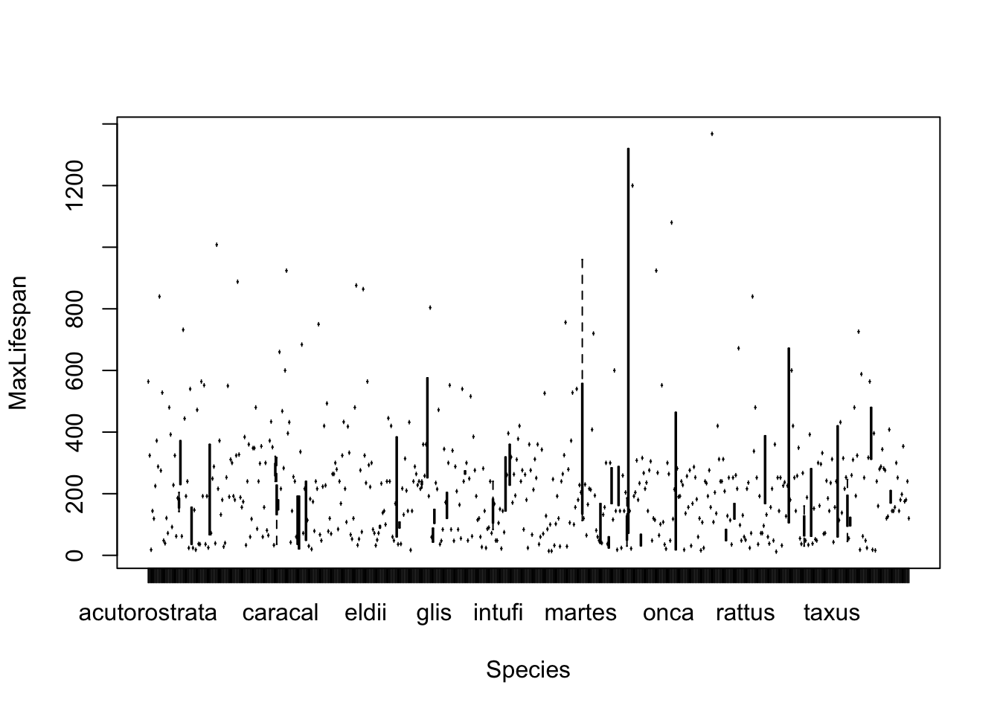
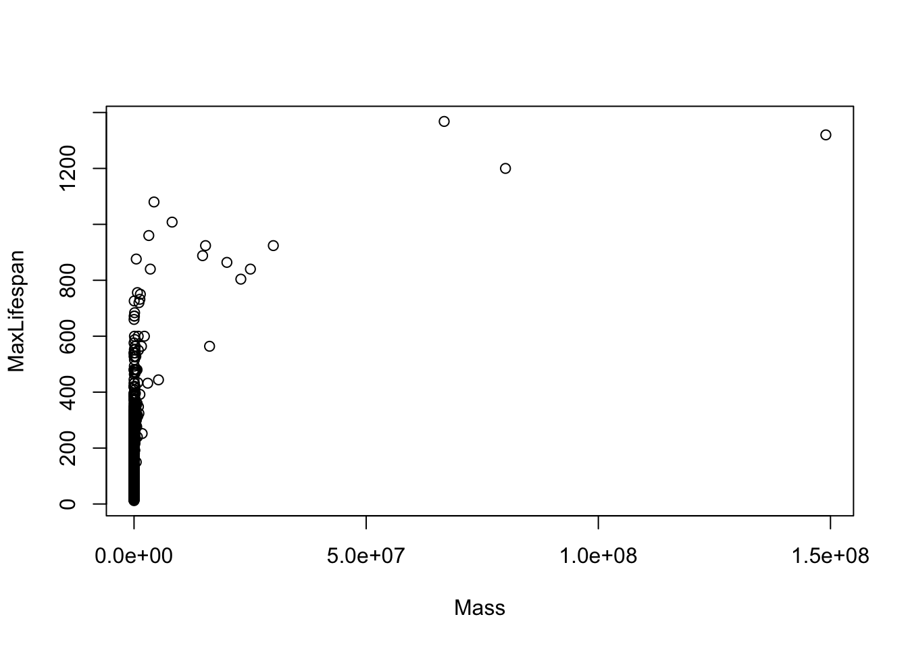

Note that most of the covariates need to be transformed to linearize the relationship. The easiest transformation to try is the log() - the covariates that should probably be transformed relate to mass and time periods: Mass, Gestation, Newborn, Weaning, WeanMass, AFR, LittersPerYear (possible, not clear what the best transmation is for this). In other words, look at:
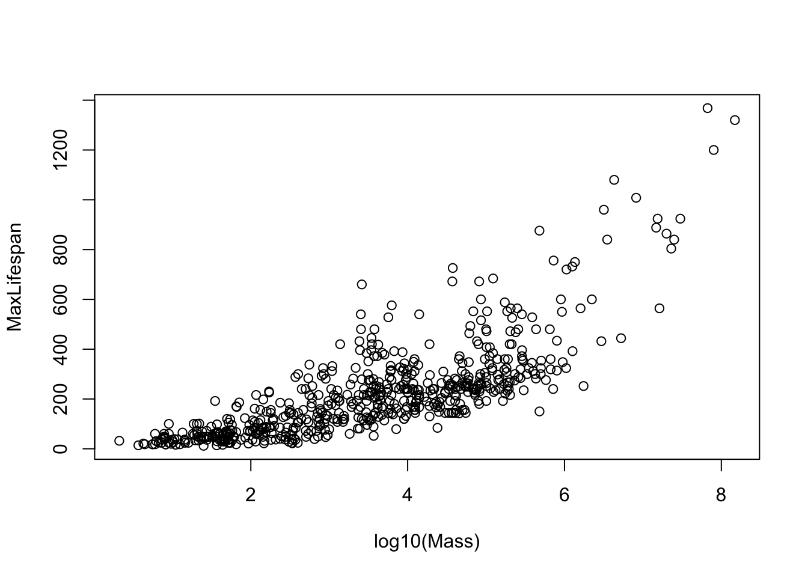

etc.
For now, let’s ignore the taxonomic covariates and focus on just three covariates: Mass, AFR, and LitterSize.
Fitting the model using ‘lm’
Let’s fit the model with Mass,AFR, and LitterSize. We will consider this the full model.
##
## Call:
## lm(formula = MaxLifespan ~ log10(Mass) + log10(AFR) + LitterSize)
##
## Residuals:
## Min 1Q Median 3Q Max
## -263.66 -78.11 -19.31 53.52 763.75
##
## Coefficients:
## Estimate Std. Error t value Pr(>|t|)
## (Intercept) -168.4019 26.8904 -6.263 8.35e-10 ***
## log10(Mass) 60.7061 5.6008 10.839 < 2e-16 ***
## log10(AFR) 152.5190 17.5461 8.692 < 2e-16 ***
## LitterSize -0.1925 3.8823 -0.050 0.96
## ---
## Signif. codes: 0 '***' 0.001 '**' 0.01 '*' 0.05 '.' 0.1 ' ' 1
##
## Residual standard error: 118.7 on 485 degrees of freedom
## (951 observations deleted due to missingness)
## Multiple R-squared: 0.6282, Adjusted R-squared: 0.6259
## F-statistic: 273.1 on 3 and 485 DF, p-value: < 2.2e-16Model diagnostics
Let’s look at the residuals as a function of the fitted values:

Let’s look at the residuals using the ‘car’ package function ‘residualPlots’. This command produces scatterplots of the residuals versus each of the predictors and versus the final fitted value. Note that what we did manually above is reproduced as the final panel here.

## Test stat Pr(>|Test stat|)
## log10(Mass) 12.8413 <2e-16 ***
## log10(AFR) 11.6289 <2e-16 ***
## LitterSize 0.2717 0.786
## Tukey test 15.0728 <2e-16 ***
## ---
## Signif. codes: 0 '***' 0.001 '**' 0.01 '*' 0.05 '.' 0.1 ' ' 1We can assess the normality of the residuals by histogramming the studentized residuals. We can pull these out from the fitted model using the ‘studres’ function from the ‘MASS’ package.
sresid<-studres(fit)
hist(sresid,freq=FALSE)
xfit<-seq(min(sresid),max(sresid),length=40)
yfit<-dnorm(xfit)
lines(xfit,yfit)
A variation on the basic residual plot is the marginal model plot.

Note that loess smoothers have been added showing the non-parametric regression between the actual data (solid line) and the model prediction (dashed line) against each of the predictor variables. If these two lines are close together, that is an indication of good model fit.
Note that the marginal plots display the relationship between the response and each covariates IGNORING the other covariates. We can also look at the relationship between the response and each covariates CONTROLLING for the other covariates. We do this through “added variable plots”.
Let’s say we have the following model
\[ Y \sim X_{1} + X_{2} + X_{3} \]
There are two steps in building the added-variable plot for \(X_{1}\):
- Regress
\[ Y \sim X_{2} + X_{3} \]
The residuals from this plot reflect all the variation that is not otherwise explained in the model (i.e. by all the covariates except \(X_{1}\)).
- Regress
\[ X_{1} \sim X_{2} + X_{3} \]
The residuals from this plot represent the part of \(X_{1}\) not explained by the other covariates.
The added variable plot is simply a plot of the residuals from #1 on the y-axis and the residuals from #2 on the x-axis.
We can do this in R using the function ‘avPlots’ from the ‘car’ package
## Warning in plot.window(...): "id.n" is not a graphical parameter## Warning in plot.xy(xy, type, ...): "id.n" is not a graphical parameter## Warning in axis(side = side, at = at, labels = labels, ...): "id.n" is not a
## graphical parameter
## Warning in axis(side = side, at = at, labels = labels, ...): "id.n" is not a
## graphical parameter## Warning in box(...): "id.n" is not a graphical parameter## Warning in title(...): "id.n" is not a graphical parameter## Warning in plot.xy(xy.coords(x, y), type = type, ...): "id.n" is not a
## graphical parameter## Warning in plot.window(...): "id.n" is not a graphical parameter## Warning in plot.xy(xy, type, ...): "id.n" is not a graphical parameter## Warning in axis(side = side, at = at, labels = labels, ...): "id.n" is not a
## graphical parameter
## Warning in axis(side = side, at = at, labels = labels, ...): "id.n" is not a
## graphical parameter## Warning in box(...): "id.n" is not a graphical parameter## Warning in title(...): "id.n" is not a graphical parameter## Warning in plot.xy(xy.coords(x, y), type = type, ...): "id.n" is not a
## graphical parameter## Warning in plot.window(...): "id.n" is not a graphical parameter## Warning in plot.xy(xy, type, ...): "id.n" is not a graphical parameter## Warning in axis(side = side, at = at, labels = labels, ...): "id.n" is not a
## graphical parameter
## Warning in axis(side = side, at = at, labels = labels, ...): "id.n" is not a
## graphical parameter## Warning in box(...): "id.n" is not a graphical parameter## Warning in title(...): "id.n" is not a graphical parameter## Warning in plot.xy(xy.coords(x, y), type = type, ...): "id.n" is not a
## graphical parameter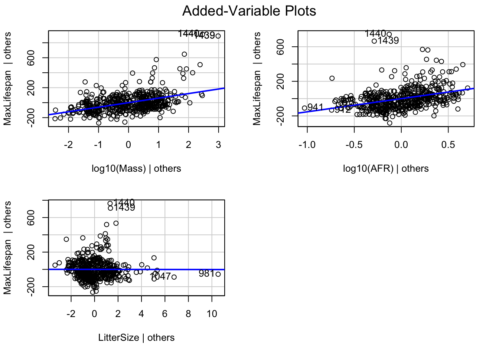
The id.n option will cause the plot to identify the two points that are furthest from the mean on the x axis and the two with the largest absolute residuals.
The added variable plot allows us to visualize the effect of each covariate after adjusting for all the other covariates in the model.
We can also look at leverage by using the command ‘leveragePlots’

For covariates with only a single degree of freedom (i.e. not different levels of a factor), this will simply be a rescaled version of the added-variable plots.
Outliers
Let’s look for outliers using the ‘car’ function ‘outlierTest’ which reports the Bonferroni p-values for Studentized residuals:
## rstudent unadjusted p-value Bonferroni p
## 1440 6.797206 3.1481e-11 1.5394e-08
## 1439 6.284883 7.3267e-10 3.5828e-07
## 1438 4.650225 4.2834e-06 2.0946e-03
## 1437 4.488601 8.9697e-06 4.3862e-03Plot the qqplot for the studentized residuals using the ‘car’ package function qqPlot. WARNING: This is not the same as qqplot (lower case p); this is a specialized function in the ‘car’ package that will plot the appropriate qqplot for the studentized residuals given a fitted model as input.
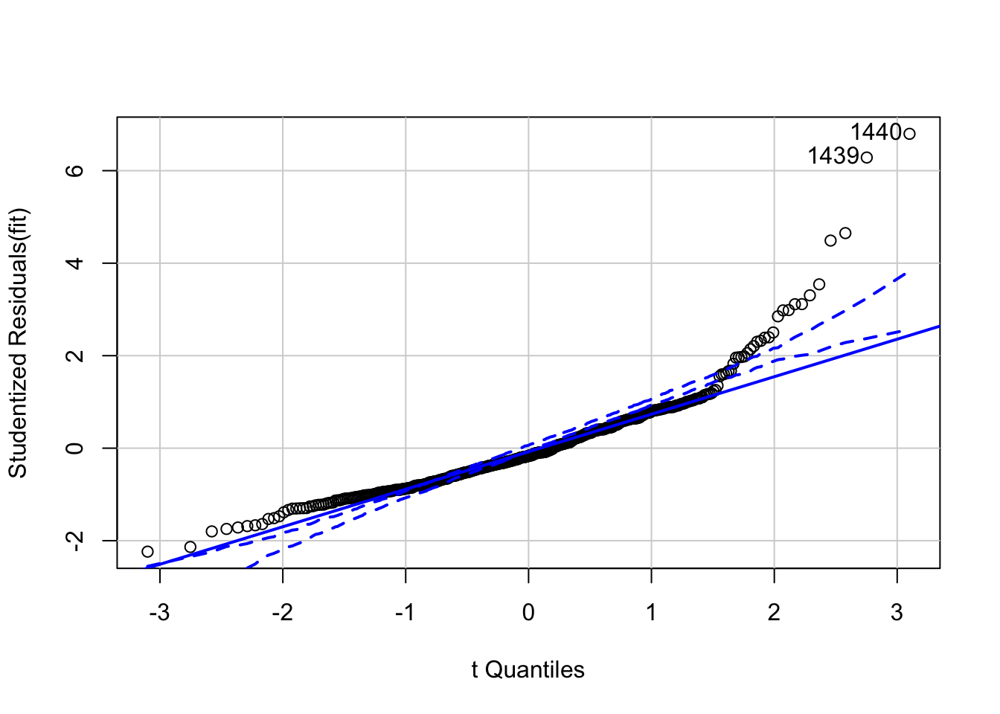
## [1] 1439 1440To identify points with high leverage, we want to calculate the hat values for each of the points. We can do this using the ‘hatvalues” command in the ’car’ package.
## 842 846 847 848 849 850
## 0.015068582 0.017116554 0.013839481 0.021939881 0.017150953 0.018853062
## 853 854 856 857 858 859
## 0.009549529 0.005599577 0.014340191 0.019328979 0.012823175 0.013772585
## 861 862 863 865 866 867
## 0.009440959 0.016442917 0.017600641 0.007572179 0.013613866 0.007801192
## 870 873 874 875 877 879
## 0.011338383 0.008197299 0.014927487 0.006055714 0.011443251 0.016563954
## 880 882 884 885 886 887
## 0.013955050 0.010053036 0.015267217 0.010993510 0.012341340 0.014343983
## 888 889 891 893 894 895
## 0.008865008 0.005970050 0.011063709 0.029705488 0.011271224 0.003770331
## 896 897 899 900 901 902
## 0.004983555 0.009589510 0.011642918 0.010190113 0.008382325 0.007342826
## 905 906 907 908 909 910
## 0.014709335 0.015055631 0.006571569 0.006224857 0.015789476 0.012402864
## 911 912 913 914 915 916
## 0.006796631 0.015641460 0.009947711 0.011609740 0.013271976 0.008664947
## 919 920 921 922 923 924
## 0.011320700 0.009584098 0.008836642 0.023302778 0.013285879 0.013900936
## 925 926 928 929 931 932
## 0.006221926 0.009090168 0.004859531 0.004634291 0.010114932 0.003656926
## 933 937 938 939 940 941
## 0.011388887 0.010593856 0.007535007 0.007456337 0.007670776 0.030754607
## 942 944 945 946 947 949
## 0.011129173 0.008955209 0.010397163 0.014035279 0.011948458 0.012339818
## 950 951 952 954 955 956
## 0.006449339 0.011225454 0.008363365 0.008531905 0.016430642 0.010567908
## 959 960 961 962 963 966
## 0.009671992 0.015610676 0.007195425 0.006295996 0.007158921 0.013672739
## 968 969 970 971 972 973
## 0.034809065 0.005230397 0.005791008 0.017812912 0.005496217 0.008931287
## 974 975 976 977 978 979
## 0.010714088 0.007259116 0.013047745 0.012098943 0.003733398 0.003745609
## 980 981 983 985 986 987
## 0.007505282 0.122249610 0.011234272 0.003202089 0.003567088 0.013845063
## 988 989 990 992 993 996
## 0.005235163 0.009494211 0.008892926 0.012990091 0.008085905 0.005684921
## 998 1001 1002 1003 1004 1005
## 0.003768405 0.007223905 0.005180949 0.004814076 0.007704883 0.004911695
## 1006 1008 1009 1011 1012 1013
## 0.008829438 0.008971676 0.008165306 0.007724797 0.006735167 0.011439088
## 1016 1017 1018 1020 1021 1024
## 0.011792716 0.003381829 0.009339714 0.003349616 0.004859820 0.005352438
## 1025 1027 1028 1029 1030 1032
## 0.006487226 0.006408716 0.005061128 0.003532664 0.008939130 0.004258913
## 1033 1034 1035 1036 1037 1038
## 0.002395187 0.004871201 0.005370386 0.007518471 0.010234137 0.003800835
## 1039 1040 1041 1043 1046 1047
## 0.013633921 0.002976951 0.005133274 0.007015061 0.003943074 0.051406682
## 1049 1051 1052 1053 1054 1056
## 0.004092141 0.006286774 0.002611721 0.013539610 0.008068323 0.004325113
## 1057 1059 1060 1061 1062 1063
## 0.005555973 0.004945531 0.002924891 0.004345880 0.005991305 0.007685537
## 1064 1065 1066 1067 1068 1069
## 0.004908637 0.004400779 0.003253593 0.011575449 0.007305610 0.005860831
## 1070 1071 1072 1074 1075 1076
## 0.002402003 0.002792913 0.005557776 0.007675980 0.010483247 0.006799054
## 1077 1082 1083 1084 1085 1086
## 0.006660530 0.006995133 0.006078065 0.002901274 0.007114720 0.004327091
## 1087 1089 1090 1091 1092 1094
## 0.005282506 0.003614222 0.006269742 0.006495829 0.008953724 0.004307162
## 1095 1096 1097 1099 1100 1101
## 0.007351841 0.005469209 0.003710382 0.010650969 0.002978093 0.003473076
## 1102 1103 1105 1106 1108 1110
## 0.006171337 0.007069918 0.005347415 0.003187388 0.024443728 0.011503286
## 1111 1112 1113 1114 1115 1116
## 0.011335444 0.006680094 0.007107539 0.007312845 0.002519741 0.007070413
## 1117 1118 1119 1120 1121 1122
## 0.002830881 0.004408249 0.003807998 0.003297593 0.003592997 0.002743881
## 1123 1124 1126 1127 1128 1129
## 0.002194139 0.003298492 0.009266549 0.006794262 0.007208532 0.008079244
## 1130 1131 1132 1133 1134 1135
## 0.006286228 0.008345838 0.003273337 0.003828792 0.005575621 0.006207749
## 1136 1137 1138 1139 1142 1143
## 0.007097858 0.013811813 0.006330278 0.011706480 0.003789064 0.002575829
## 1144 1145 1146 1147 1149 1150
## 0.006992516 0.003514526 0.005379992 0.034096666 0.005852205 0.033293641
## 1151 1152 1153 1154 1155 1156
## 0.003453114 0.009386505 0.007006645 0.030158122 0.004003816 0.005932827
## 1157 1158 1159 1160 1161 1163
## 0.006238935 0.007099396 0.003294258 0.004460579 0.002382034 0.004959417
## 1164 1165 1166 1167 1168 1169
## 0.005815032 0.005636536 0.007810206 0.011412521 0.016350024 0.003145305
## 1172 1173 1174 1175 1176 1177
## 0.006659253 0.004164675 0.010321781 0.008759469 0.008968261 0.005112558
## 1178 1179 1180 1181 1182 1183
## 0.007413931 0.004092970 0.004144759 0.005136702 0.004079677 0.007101366
## 1184 1185 1187 1188 1189 1191
## 0.007859365 0.004565706 0.007752359 0.004891404 0.004984572 0.010947371
## 1192 1193 1194 1195 1196 1197
## 0.005974901 0.003571493 0.006637753 0.005020810 0.002784743 0.008507969
## 1198 1199 1200 1202 1203 1204
## 0.005564695 0.004808824 0.005100021 0.011504907 0.002532735 0.005352594
## 1205 1206 1207 1208 1209 1210
## 0.005481630 0.004135045 0.008106898 0.010955028 0.005124791 0.003077065
## 1211 1212 1213 1215 1216 1217
## 0.003610983 0.004251044 0.004395735 0.003557946 0.006615751 0.003897994
## 1218 1222 1223 1226 1227 1228
## 0.007260722 0.004722739 0.008573003 0.006186477 0.007481516 0.006778917
## 1230 1231 1232 1233 1234 1235
## 0.004511308 0.007878819 0.002950337 0.004743704 0.007035720 0.005283641
## 1236 1237 1238 1240 1241 1242
## 0.011306445 0.022893409 0.003614331 0.003258847 0.003970306 0.004500544
## 1243 1244 1245 1246 1247 1248
## 0.008833069 0.011832830 0.004962626 0.006739456 0.002961121 0.004095768
## 1249 1250 1251 1252 1253 1254
## 0.002697826 0.007713930 0.008888300 0.006103942 0.004462294 0.004126934
## 1255 1256 1257 1258 1259 1260
## 0.003575584 0.012908842 0.007919903 0.003450691 0.005238098 0.002709156
## 1261 1262 1263 1264 1265 1266
## 0.004487147 0.004141025 0.005462472 0.005616879 0.007023565 0.004157081
## 1267 1269 1270 1271 1272 1274
## 0.005405134 0.004237417 0.008758783 0.003659095 0.003641221 0.006924737
## 1275 1277 1278 1279 1280 1282
## 0.006556800 0.006777154 0.004657738 0.007400513 0.006358517 0.006840930
## 1283 1284 1285 1286 1287 1288
## 0.003604012 0.004650281 0.002931686 0.004993995 0.004907787 0.004930544
## 1289 1290 1291 1292 1293 1294
## 0.005290486 0.008136328 0.006958753 0.006647525 0.003779911 0.007934545
## 1295 1296 1297 1298 1300 1301
## 0.004946197 0.004302767 0.006799393 0.006732886 0.004519527 0.005707493
## 1302 1303 1304 1305 1306 1307
## 0.005550477 0.002595298 0.007779227 0.009609406 0.004636675 0.011250687
## 1308 1309 1310 1311 1312 1313
## 0.004781732 0.005060416 0.003886592 0.003321002 0.011590056 0.004771912
## 1314 1315 1316 1317 1318 1319
## 0.004385500 0.005503135 0.010437770 0.006328062 0.009054948 0.005575354
## 1320 1321 1323 1325 1326 1327
## 0.006215209 0.005548372 0.008165573 0.002922401 0.006738098 0.006856105
## 1328 1329 1331 1332 1334 1335
## 0.004278941 0.005994052 0.008439600 0.005687190 0.012655364 0.004428018
## 1336 1337 1338 1339 1340 1341
## 0.002716818 0.006707334 0.006023086 0.007232496 0.003974231 0.005413279
## 1342 1343 1344 1346 1347 1348
## 0.010988882 0.003898428 0.005552927 0.005835286 0.005067843 0.006460036
## 1349 1350 1351 1353 1355 1356
## 0.003628967 0.005276712 0.005131207 0.006341430 0.005387209 0.005671682
## 1357 1358 1359 1360 1361 1362
## 0.007056530 0.005369556 0.005524772 0.007859248 0.015081516 0.005429746
## 1364 1365 1366 1367 1368 1369
## 0.004934686 0.002370536 0.008380701 0.007978252 0.006482352 0.005136907
## 1370 1371 1372 1373 1374 1375
## 0.002962098 0.004225617 0.006654086 0.010193078 0.004704468 0.003955831
## 1376 1377 1378 1379 1380 1382
## 0.005892978 0.006761250 0.009081694 0.004618119 0.003413752 0.005023688
## 1384 1385 1386 1388 1389 1390
## 0.006697765 0.011954991 0.007447664 0.004846690 0.007081667 0.007402309
## 1391 1392 1394 1395 1396 1397
## 0.005589098 0.006310048 0.005901080 0.008585187 0.016351942 0.003439244
## 1398 1399 1401 1402 1403 1404
## 0.006193983 0.004744828 0.005438690 0.005680335 0.010608833 0.006236326
## 1405 1406 1407 1408 1409 1411
## 0.006949090 0.004709298 0.010467387 0.008132087 0.014792229 0.006401322
## 1412 1413 1414 1415 1416 1417
## 0.008215980 0.010237253 0.007768586 0.005145764 0.007202106 0.008845023
## 1418 1419 1420 1421 1422 1423
## 0.008912327 0.004916235 0.010635773 0.008120296 0.007774509 0.012684103
## 1424 1426 1427 1428 1429 1430
## 0.008368418 0.008586505 0.016052450 0.016559061 0.012372053 0.015524328
## 1431 1432 1433 1434 1435 1437
## 0.008787016 0.014546150 0.017984508 0.014618941 0.011304205 0.012288729
## 1438 1439 1440
## 0.022172504 0.025746100 0.020671173Note that the ‘stats’ package has a function called ‘lm.influence’ that provides much the same information.
We can make a plot that highlights highly influential values. We will use John Fox’s suggested cut-off of 4/(n-p-1) where n=number of data points and p=number of estimated parameters.

Another useful plot is created by ‘influencePlot’ which creates a “bubble” plot of studentized residuals by hat values, with the areas of the circles representing the observations proportional to Cook’s distances. Vertical reference lines are drawn at twice and three times the average hat value, horizontal reference lines at -2,0,2 on the studentized-residual scale.
## Warning in plot.window(...): "id.method" is not a graphical parameter## Warning in plot.xy(xy, type, ...): "id.method" is not a graphical parameter## Warning in axis(side = side, at = at, labels = labels, ...): "id.method" is not
## a graphical parameter
## Warning in axis(side = side, at = at, labels = labels, ...): "id.method" is not
## a graphical parameter## Warning in box(...): "id.method" is not a graphical parameter## Warning in title(...): "id.method" is not a graphical parameter## Warning in plot.xy(xy.coords(x, y), type = type, ...): "id.method" is not a
## graphical parameter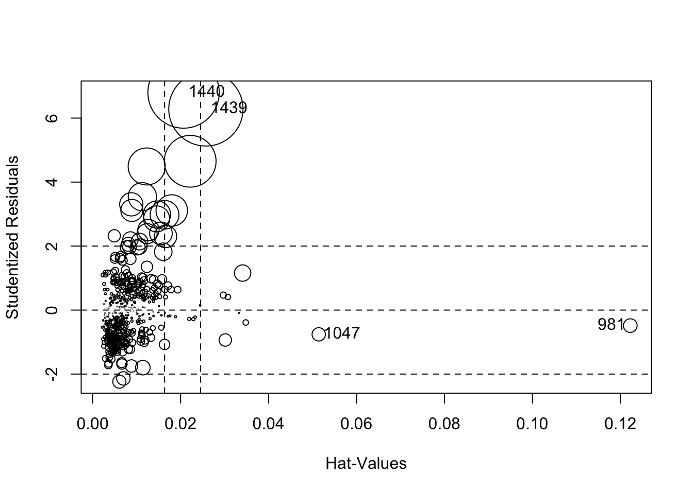
## StudRes Hat CookD
## 981 -0.4853275 0.12224961 0.008214314
## 1047 -0.7584248 0.05140668 0.007799829
## 1439 6.2848828 0.02574610 0.241768060
## 1440 6.7972059 0.02067117 0.223016923Heteroskedacity
Although we can often pick up heteroskedacity graphically, we can test for it formally by using the ‘ncvTest’ function in the ‘car’ package
## Non-constant Variance Score Test
## Variance formula: ~ fitted.values
## Chisquare = 297.9263, Df = 1, p = < 2.22e-16We can also use the function ‘spreadLevelPlot’ from the ‘car’ package to create plots for examining potential heteroskedacity in the data.
## Warning in spreadLevelPlot.lm(fit):
## 47 negative fitted values removed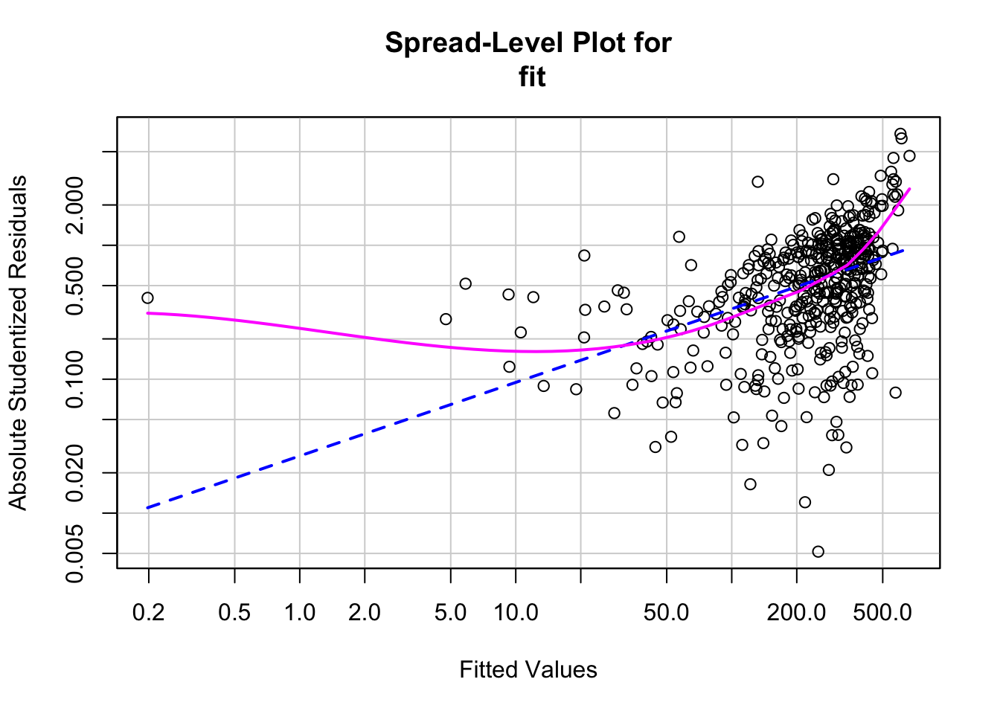
##
## Suggested power transformation: 0.4508167Multicollinearity
We can calculate the variance inflation factors using the function ‘vif’
## log10(Mass) log10(AFR) LitterSize
## 2.466580 2.434861 1.759614Serially correlated residuals
Remember, linear modelling assumes that the residuals independent and identically distributed. You can test whether the residuals are serially autocorrelated using the Durban-Watson statistic
\[ d=\frac{\sum^{T}_{t=2}(e_{t}-e_{t-1})^{2}}{\sum^{T}_{t=1}e^{2}_{t}} \]
where T is the number of data points.
We can calculate the Durban-Watson test as follows:
## lag Autocorrelation D-W Statistic p-value
## 1 0.6286888 0.6560464 0
## Alternative hypothesis: rho != 0More help with model diagnostics
There is another package that can help with model diagnostics called the ‘gvlma’ or “Global Validation of Linear Model Assumptions”.
Install ‘gvlma’
##
## Call:
## lm(formula = MaxLifespan ~ log10(Mass) + log10(AFR) + LitterSize)
##
## Residuals:
## Min 1Q Median 3Q Max
## -263.66 -78.11 -19.31 53.52 763.75
##
## Coefficients:
## Estimate Std. Error t value Pr(>|t|)
## (Intercept) -168.4019 26.8904 -6.263 8.35e-10 ***
## log10(Mass) 60.7061 5.6008 10.839 < 2e-16 ***
## log10(AFR) 152.5190 17.5461 8.692 < 2e-16 ***
## LitterSize -0.1925 3.8823 -0.050 0.96
## ---
## Signif. codes: 0 '***' 0.001 '**' 0.01 '*' 0.05 '.' 0.1 ' ' 1
##
## Residual standard error: 118.7 on 485 degrees of freedom
## (951 observations deleted due to missingness)
## Multiple R-squared: 0.6282, Adjusted R-squared: 0.6259
## F-statistic: 273.1 on 3 and 485 DF, p-value: < 2.2e-16
##
##
## ASSESSMENT OF THE LINEAR MODEL ASSUMPTIONS
## USING THE GLOBAL TEST ON 4 DEGREES-OF-FREEDOM:
## Level of Significance = 0.05
##
## Call:
## gvlma(x = fit)
##
## Value p-value Decision
## Global Stat 1752.4 0 Assumptions NOT satisfied!
## Skewness 285.2 0 Assumptions NOT satisfied!
## Kurtosis 1121.3 0 Assumptions NOT satisfied!
## Link Function 156.2 0 Assumptions NOT satisfied!
## Heteroscedasticity 189.6 0 Assumptions NOT satisfied!Yet another package we won’t discuss but may prove helpful is the ‘lmtest’ package.